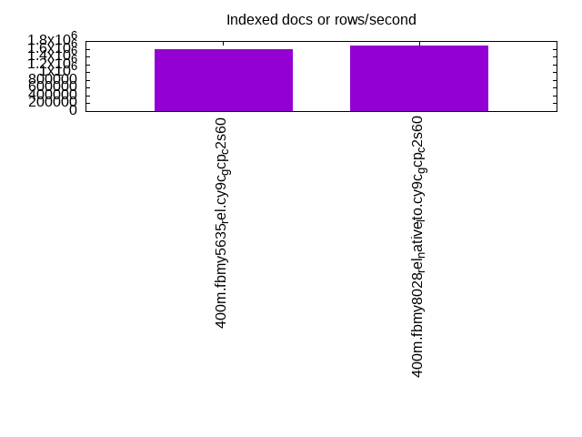
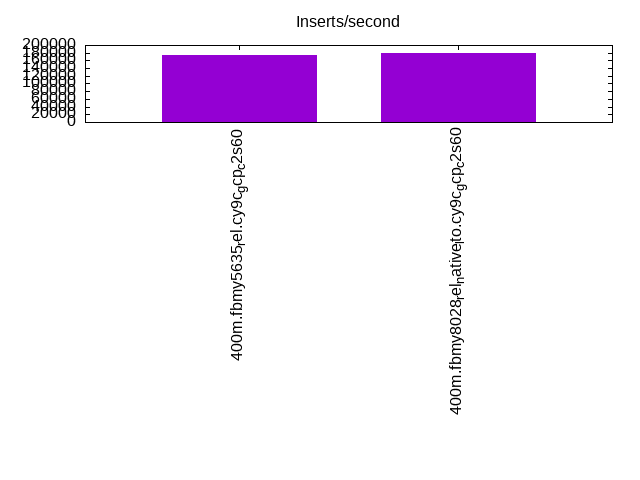
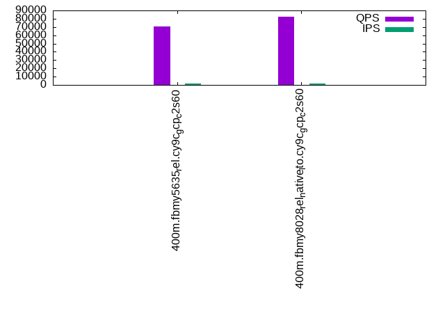
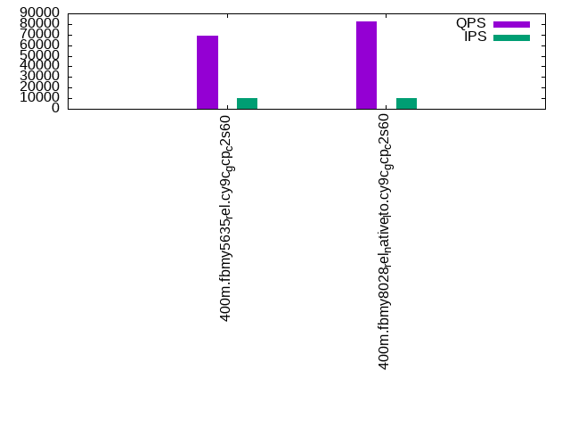

This is a report for the insert benchmark with 400M docs and 20 client(s). It is generated by scripts (bash, awk, sed) and Tufte might not be impressed. An overview of the insert benchmark is here and a short update is here. Below, by DBMS, I mean DBMS+version.config. An example is my8020.c10b40 where my means MySQL, 8020 is version 8.0.20 and c10b40 is the name for the configuration file.
The test server is c2-standard-60 from GCP with 30 cores, hyperthreading disabled, 240G RAM and 3T of NVMe storage. The benchmark was run with 20 clients and there were 1 or 2 connections per client (1 for queries, 1 for inserts). The benchmark loads 400M rows without secondary indexes, creates secondary indexes, loads another 400M rows then does 3 read+write tests for 1800 seconds each that do queries as fast as possible with 100, 500 and then 1000 writes/second/client concurrent with the queries. There was 1 table per client. The database is cached by the storage engine and the only IO is for writes. Clients and the DBMS share one server. The per-database configs are in the per-database subdirectories here.
The tested DBMS are:
The numbers are inserts/s for l.i0 and l.i1, indexed docs (or rows) /s for l.x and queries/s for q*.2. The values are the average rate over the entire test for inserts (IPS) and queries (QPS). The range of values for IPS and QPS is split into 3 parts: bottom 25%, middle 50%, top 25%. Values in the bottom 25% have a red background, values in the top 25% have a green background and values in the middle have no color. A gray background is used for values that can be ignored because the DBMS did not sustain the target insert rate. Red backgrounds are not used when the minimum value is within 80% of the max value.
| dbms | l.i0 | l.x | l.i1 | q100.1 | q500.1 | q1000.1 |
|---|---|---|---|---|---|---|
| 400m.fbmy5635_rel.cy9c_gcp_c2s60 | 652528 | 1600400 | 174825 | 70710 | 69305 | 66862 |
| 400m.fbmy8028_rel_native_lto.cy9c_gcp_c2s60 | 632911 | 1688186 | 180424 | 82640 | 82027 | 79462 |
This table has relative throughput, throughput for the DBMS relative to the DBMS in the first line, using the absolute throughput from the previous table.
| dbms | l.i0 | l.x | l.i1 | q100.1 | q500.1 | q1000.1 |
|---|---|---|---|---|---|---|
| 400m.fbmy5635_rel.cy9c_gcp_c2s60 | 1.00 | 1.00 | 1.00 | 1.00 | 1.00 | 1.00 |
| 400m.fbmy8028_rel_native_lto.cy9c_gcp_c2s60 | 0.97 | 1.05 | 1.03 | 1.17 | 1.18 | 1.19 |
This lists the average rate of inserts/s for the tests that do inserts concurrent with queries. For such tests the query rate is listed in the table above. The read+write tests are setup so that the insert rate should match the target rate every second. Cells that are not at least 95% of the target have a red background to indicate a failure to satisfy the target.
| dbms | q100.1 | q500.1 | q1000.1 |
|---|---|---|---|
| fbmy5635_rel.cy9c_gcp_c2s60 | 1976 | 9885 | 19769 |
| fbmy8028_rel_native_lto.cy9c_gcp_c2s60 | 1976 | 9879 | 19769 |
| target | 2000 | 10000 | 20000 |
l.i0: load without secondary indexes. Graphs for performance per 1-second interval are here.
Average throughput:
Insert response time histogram: each cell has the percentage of responses that take <= the time in the header and max is the max response time in seconds. For the max column values in the top 25% of the range have a red background and in the bottom 25% of the range have a green background. The red background is not used when the min value is within 80% of the max value.
| dbms | 256us | 1ms | 4ms | 16ms | 64ms | 256ms | 1s | 4s | 16s | gt | max |
|---|---|---|---|---|---|---|---|---|---|---|---|
| fbmy5635_rel.cy9c_gcp_c2s60 | 4.071 | 90.922 | 4.964 | 0.008 | 0.028 | 0.006 | 0.357 | ||||
| fbmy8028_rel_native_lto.cy9c_gcp_c2s60 | 0.529 | 93.214 | 6.183 | 0.032 | 0.037 | 0.004 | 0.376 |
Performance metrics for the DBMS listed above. Some are normalized by throughput, others are not. Legend for results is here.
ips qps rps rmbps wps wmbps rpq rkbpq wpi wkbpi csps cpups cspq cpupq dbgb1 dbgb2 rss maxop p50 p99 tag 652528 0 0 0.0 825.3 247.0 0.000 0.000 0.001 0.388 593150 63.4 0.909 29 13.1 13.5 NA 0.357 32975 18679 400m.fbmy5635_rel.cy9c_gcp_c2s60 632911 0 0 0.0 634.5 147.7 0.000 0.000 0.001 0.239 458866 63.3 0.725 30 12.6 13.2 3.8 0.376 32565 15983 400m.fbmy8028_rel_native_lto.cy9c_gcp_c2s60
l.x: create secondary indexes.
Average throughput:
Performance metrics for the DBMS listed above. Some are normalized by throughput, others are not. Legend for results is here.
ips qps rps rmbps wps wmbps rpq rkbpq wpi wkbpi csps cpups cspq cpupq dbgb1 dbgb2 rss maxop p50 p99 tag 1600400 0 3 0.2 809.9 233.0 0.000 0.000 0.001 0.149 5729 58.4 0.004 11 26.9 27.3 NA 0.003 NA NA 400m.fbmy5635_rel.cy9c_gcp_c2s60 1688186 0 3 0.2 628.7 175.6 0.000 0.000 0.000 0.107 6271 55.9 0.004 10 26.9 27.5 26.2 0.004 NA NA 400m.fbmy8028_rel_native_lto.cy9c_gcp_c2s60
l.i1: continue load after secondary indexes created. Graphs for performance per 1-second interval are here.
Average throughput:
Insert response time histogram: each cell has the percentage of responses that take <= the time in the header and max is the max response time in seconds. For the max column values in the top 25% of the range have a red background and in the bottom 25% of the range have a green background. The red background is not used when the min value is within 80% of the max value.
| dbms | 256us | 1ms | 4ms | 16ms | 64ms | 256ms | 1s | 4s | 16s | gt | max |
|---|---|---|---|---|---|---|---|---|---|---|---|
| fbmy5635_rel.cy9c_gcp_c2s60 | 0.172 | 16.186 | 83.604 | 0.018 | 0.017 | 0.003 | 0.380 | ||||
| fbmy8028_rel_native_lto.cy9c_gcp_c2s60 | 0.052 | 12.570 | 87.109 | 0.245 | 0.022 | 0.002 | 0.397 |
Performance metrics for the DBMS listed above. Some are normalized by throughput, others are not. Legend for results is here.
ips qps rps rmbps wps wmbps rpq rkbpq wpi wkbpi csps cpups cspq cpupq dbgb1 dbgb2 rss maxop p50 p99 tag 174825 0 19 4.1 800.7 236.1 0.000 0.024 0.005 1.383 160082 33.7 0.916 58 56.5 58.0 NA 0.380 8793 6793 400m.fbmy5635_rel.cy9c_gcp_c2s60 180424 0 15 4.0 612.2 149.7 0.000 0.023 0.003 0.849 171260 37.4 0.949 62 63.2 64.9 43.7 0.397 9140 3996 400m.fbmy8028_rel_native_lto.cy9c_gcp_c2s60
q100.1: range queries with 100 insert/s per client. Graphs for performance per 1-second interval are here.
Average throughput:
Query response time histogram: each cell has the percentage of responses that take <= the time in the header and max is the max response time in seconds. For max values in the top 25% of the range have a red background and in the bottom 25% of the range have a green background. The red background is not used when the min value is within 80% of the max value.
| dbms | 256us | 1ms | 4ms | 16ms | 64ms | 256ms | 1s | 4s | 16s | gt | max |
|---|---|---|---|---|---|---|---|---|---|---|---|
| fbmy5635_rel.cy9c_gcp_c2s60 | 34.608 | 65.388 | 0.003 | 0.001 | nonzero | 0.031 | |||||
| fbmy8028_rel_native_lto.cy9c_gcp_c2s60 | 79.589 | 20.404 | 0.006 | 0.001 | 0.001 | 0.047 |
Insert response time histogram: each cell has the percentage of responses that take <= the time in the header and max is the max response time in seconds. For max values in the top 25% of the range have a red background and in the bottom 25% of the range have a green background. The red background is not used when the min value is within 80% of the max value.
| dbms | 256us | 1ms | 4ms | 16ms | 64ms | 256ms | 1s | 4s | 16s | gt | max |
|---|---|---|---|---|---|---|---|---|---|---|---|
| fbmy5635_rel.cy9c_gcp_c2s60 | 0.546 | 98.186 | 1.268 | 0.009 | |||||||
| fbmy8028_rel_native_lto.cy9c_gcp_c2s60 | 0.581 | 98.965 | 0.418 | 0.036 | 0.025 |
Performance metrics for the DBMS listed above. Some are normalized by throughput, others are not. Legend for results is here.
ips qps rps rmbps wps wmbps rpq rkbpq wpi wkbpi csps cpups cspq cpupq dbgb1 dbgb2 rss maxop p50 p99 tag 1976 70710 0 0.0 18.8 5.1 0.000 0.000 0.010 2.617 295340 64.8 4.177 275 56.2 58.1 NA 0.031 3566 3069 400m.fbmy5635_rel.cy9c_gcp_c2s60 1976 82640 0 0.0 35.8 7.9 0.000 0.000 0.018 4.109 323796 66.3 3.918 241 56.1 58.3 90.7 0.047 4173 2766 400m.fbmy8028_rel_native_lto.cy9c_gcp_c2s60
q500.1: range queries with 500 insert/s per client. Graphs for performance per 1-second interval are here.
Average throughput:
Query response time histogram: each cell has the percentage of responses that take <= the time in the header and max is the max response time in seconds. For max values in the top 25% of the range have a red background and in the bottom 25% of the range have a green background. The red background is not used when the min value is within 80% of the max value.
| dbms | 256us | 1ms | 4ms | 16ms | 64ms | 256ms | 1s | 4s | 16s | gt | max |
|---|---|---|---|---|---|---|---|---|---|---|---|
| fbmy5635_rel.cy9c_gcp_c2s60 | 27.753 | 72.213 | 0.033 | 0.001 | 0.001 | 0.041 | |||||
| fbmy8028_rel_native_lto.cy9c_gcp_c2s60 | 77.417 | 22.559 | 0.023 | 0.001 | nonzero | 0.027 |
Insert response time histogram: each cell has the percentage of responses that take <= the time in the header and max is the max response time in seconds. For max values in the top 25% of the range have a red background and in the bottom 25% of the range have a green background. The red background is not used when the min value is within 80% of the max value.
| dbms | 256us | 1ms | 4ms | 16ms | 64ms | 256ms | 1s | 4s | 16s | gt | max |
|---|---|---|---|---|---|---|---|---|---|---|---|
| fbmy5635_rel.cy9c_gcp_c2s60 | 0.057 | 15.678 | 83.859 | 0.402 | 0.004 | 0.128 | |||||
| fbmy8028_rel_native_lto.cy9c_gcp_c2s60 | 0.101 | 47.727 | 52.070 | 0.101 | 0.031 |
Performance metrics for the DBMS listed above. Some are normalized by throughput, others are not. Legend for results is here.
ips qps rps rmbps wps wmbps rpq rkbpq wpi wkbpi csps cpups cspq cpupq dbgb1 dbgb2 rss maxop p50 p99 tag 9885 69305 0 0.0 63.1 18.5 0.000 0.000 0.006 1.912 284508 66.0 4.105 286 57.4 57.6 NA 0.041 3516 3212 400m.fbmy5635_rel.cy9c_gcp_c2s60 9879 82027 0 0.0 43.8 12.2 0.000 0.000 0.004 1.260 318814 67.1 3.887 245 57.3 57.8 111.9 0.027 4092 3740 400m.fbmy8028_rel_native_lto.cy9c_gcp_c2s60
q1000.1: range queries with 1000 insert/s per client. Graphs for performance per 1-second interval are here.
Average throughput:
Query response time histogram: each cell has the percentage of responses that take <= the time in the header and max is the max response time in seconds. For max values in the top 25% of the range have a red background and in the bottom 25% of the range have a green background. The red background is not used when the min value is within 80% of the max value.
| dbms | 256us | 1ms | 4ms | 16ms | 64ms | 256ms | 1s | 4s | 16s | gt | max |
|---|---|---|---|---|---|---|---|---|---|---|---|
| fbmy5635_rel.cy9c_gcp_c2s60 | 18.876 | 81.068 | 0.056 | 0.001 | nonzero | 0.038 | |||||
| fbmy8028_rel_native_lto.cy9c_gcp_c2s60 | 70.071 | 29.888 | 0.039 | 0.001 | nonzero | 0.037 |
Insert response time histogram: each cell has the percentage of responses that take <= the time in the header and max is the max response time in seconds. For max values in the top 25% of the range have a red background and in the bottom 25% of the range have a green background. The red background is not used when the min value is within 80% of the max value.
| dbms | 256us | 1ms | 4ms | 16ms | 64ms | 256ms | 1s | 4s | 16s | gt | max |
|---|---|---|---|---|---|---|---|---|---|---|---|
| fbmy5635_rel.cy9c_gcp_c2s60 | 0.077 | 25.608 | 73.993 | 0.321 | 0.034 | ||||||
| fbmy8028_rel_native_lto.cy9c_gcp_c2s60 | 0.044 | 37.714 | 62.055 | 0.185 | 0.002 | 0.089 |
Performance metrics for the DBMS listed above. Some are normalized by throughput, others are not. Legend for results is here.
ips qps rps rmbps wps wmbps rpq rkbpq wpi wkbpi csps cpups cspq cpupq dbgb1 dbgb2 rss maxop p50 p99 tag 19769 66862 0 0.0 116.1 34.1 0.000 0.000 0.006 1.765 269484 67.8 4.030 304 60.1 61.0 NA 0.038 3373 3053 400m.fbmy5635_rel.cy9c_gcp_c2s60 19769 79462 0 0.0 81.0 26.4 0.000 0.000 0.004 1.366 306328 68.8 3.855 260 59.9 61.0 151.9 0.037 3995 3612 400m.fbmy8028_rel_native_lto.cy9c_gcp_c2s60
l.i0: load without secondary indexes
Performance metrics for all DBMS, not just the ones listed above. Some are normalized by throughput, others are not. Legend for results is here.
ips qps rps rmbps wps wmbps rpq rkbpq wpi wkbpi csps cpups cspq cpupq dbgb1 dbgb2 rss maxop p50 p99 tag 652528 0 0 0.0 825.3 247.0 0.000 0.000 0.001 0.388 593150 63.4 0.909 29 13.1 13.5 NA 0.357 32975 18679 400m.fbmy5635_rel.cy9c_gcp_c2s60 632911 0 0 0.0 634.5 147.7 0.000 0.000 0.001 0.239 458866 63.3 0.725 30 12.6 13.2 3.8 0.376 32565 15983 400m.fbmy8028_rel_native_lto.cy9c_gcp_c2s60
l.x: create secondary indexes
Performance metrics for all DBMS, not just the ones listed above. Some are normalized by throughput, others are not. Legend for results is here.
ips qps rps rmbps wps wmbps rpq rkbpq wpi wkbpi csps cpups cspq cpupq dbgb1 dbgb2 rss maxop p50 p99 tag 1600400 0 3 0.2 809.9 233.0 0.000 0.000 0.001 0.149 5729 58.4 0.004 11 26.9 27.3 NA 0.003 NA NA 400m.fbmy5635_rel.cy9c_gcp_c2s60 1688186 0 3 0.2 628.7 175.6 0.000 0.000 0.000 0.107 6271 55.9 0.004 10 26.9 27.5 26.2 0.004 NA NA 400m.fbmy8028_rel_native_lto.cy9c_gcp_c2s60
l.i1: continue load after secondary indexes created
Performance metrics for all DBMS, not just the ones listed above. Some are normalized by throughput, others are not. Legend for results is here.
ips qps rps rmbps wps wmbps rpq rkbpq wpi wkbpi csps cpups cspq cpupq dbgb1 dbgb2 rss maxop p50 p99 tag 174825 0 19 4.1 800.7 236.1 0.000 0.024 0.005 1.383 160082 33.7 0.916 58 56.5 58.0 NA 0.380 8793 6793 400m.fbmy5635_rel.cy9c_gcp_c2s60 180424 0 15 4.0 612.2 149.7 0.000 0.023 0.003 0.849 171260 37.4 0.949 62 63.2 64.9 43.7 0.397 9140 3996 400m.fbmy8028_rel_native_lto.cy9c_gcp_c2s60
q100.1: range queries with 100 insert/s per client
Performance metrics for all DBMS, not just the ones listed above. Some are normalized by throughput, others are not. Legend for results is here.
ips qps rps rmbps wps wmbps rpq rkbpq wpi wkbpi csps cpups cspq cpupq dbgb1 dbgb2 rss maxop p50 p99 tag 1976 70710 0 0.0 18.8 5.1 0.000 0.000 0.010 2.617 295340 64.8 4.177 275 56.2 58.1 NA 0.031 3566 3069 400m.fbmy5635_rel.cy9c_gcp_c2s60 1976 82640 0 0.0 35.8 7.9 0.000 0.000 0.018 4.109 323796 66.3 3.918 241 56.1 58.3 90.7 0.047 4173 2766 400m.fbmy8028_rel_native_lto.cy9c_gcp_c2s60
q500.1: range queries with 500 insert/s per client
Performance metrics for all DBMS, not just the ones listed above. Some are normalized by throughput, others are not. Legend for results is here.
ips qps rps rmbps wps wmbps rpq rkbpq wpi wkbpi csps cpups cspq cpupq dbgb1 dbgb2 rss maxop p50 p99 tag 9885 69305 0 0.0 63.1 18.5 0.000 0.000 0.006 1.912 284508 66.0 4.105 286 57.4 57.6 NA 0.041 3516 3212 400m.fbmy5635_rel.cy9c_gcp_c2s60 9879 82027 0 0.0 43.8 12.2 0.000 0.000 0.004 1.260 318814 67.1 3.887 245 57.3 57.8 111.9 0.027 4092 3740 400m.fbmy8028_rel_native_lto.cy9c_gcp_c2s60
q1000.1: range queries with 1000 insert/s per client
Performance metrics for all DBMS, not just the ones listed above. Some are normalized by throughput, others are not. Legend for results is here.
ips qps rps rmbps wps wmbps rpq rkbpq wpi wkbpi csps cpups cspq cpupq dbgb1 dbgb2 rss maxop p50 p99 tag 19769 66862 0 0.0 116.1 34.1 0.000 0.000 0.006 1.765 269484 67.8 4.030 304 60.1 61.0 NA 0.038 3373 3053 400m.fbmy5635_rel.cy9c_gcp_c2s60 19769 79462 0 0.0 81.0 26.4 0.000 0.000 0.004 1.366 306328 68.8 3.855 260 59.9 61.0 151.9 0.037 3995 3612 400m.fbmy8028_rel_native_lto.cy9c_gcp_c2s60
Insert response time histogram
256us 1ms 4ms 16ms 64ms 256ms 1s 4s 16s gt max tag 0.000 4.071 90.922 4.964 0.008 0.028 0.006 0.000 0.000 0.000 0.357 fbmy5635_rel.cy9c_gcp_c2s60 0.000 0.529 93.214 6.183 0.032 0.037 0.004 0.000 0.000 0.000 0.376 fbmy8028_rel_native_lto.cy9c_gcp_c2s60
TODO - determine whether there is data for create index response time
Insert response time histogram
256us 1ms 4ms 16ms 64ms 256ms 1s 4s 16s gt max tag 0.000 0.172 16.186 83.604 0.018 0.017 0.003 0.000 0.000 0.000 0.380 fbmy5635_rel.cy9c_gcp_c2s60 0.000 0.052 12.570 87.109 0.245 0.022 0.002 0.000 0.000 0.000 0.397 fbmy8028_rel_native_lto.cy9c_gcp_c2s60
Query response time histogram
256us 1ms 4ms 16ms 64ms 256ms 1s 4s 16s gt max tag 34.608 65.388 0.003 0.001 nonzero 0.000 0.000 0.000 0.000 0.000 0.031 fbmy5635_rel.cy9c_gcp_c2s60 79.589 20.404 0.006 0.001 0.001 0.000 0.000 0.000 0.000 0.000 0.047 fbmy8028_rel_native_lto.cy9c_gcp_c2s60
Insert response time histogram
256us 1ms 4ms 16ms 64ms 256ms 1s 4s 16s gt max tag 0.000 0.546 98.186 1.268 0.000 0.000 0.000 0.000 0.000 0.000 0.009 fbmy5635_rel.cy9c_gcp_c2s60 0.000 0.581 98.965 0.418 0.036 0.000 0.000 0.000 0.000 0.000 0.025 fbmy8028_rel_native_lto.cy9c_gcp_c2s60
Query response time histogram
256us 1ms 4ms 16ms 64ms 256ms 1s 4s 16s gt max tag 27.753 72.213 0.033 0.001 0.001 0.000 0.000 0.000 0.000 0.000 0.041 fbmy5635_rel.cy9c_gcp_c2s60 77.417 22.559 0.023 0.001 nonzero 0.000 0.000 0.000 0.000 0.000 0.027 fbmy8028_rel_native_lto.cy9c_gcp_c2s60
Insert response time histogram
256us 1ms 4ms 16ms 64ms 256ms 1s 4s 16s gt max tag 0.000 0.057 15.678 83.859 0.402 0.004 0.000 0.000 0.000 0.000 0.128 fbmy5635_rel.cy9c_gcp_c2s60 0.000 0.101 47.727 52.070 0.101 0.000 0.000 0.000 0.000 0.000 0.031 fbmy8028_rel_native_lto.cy9c_gcp_c2s60
Query response time histogram
256us 1ms 4ms 16ms 64ms 256ms 1s 4s 16s gt max tag 18.876 81.068 0.056 0.001 nonzero 0.000 0.000 0.000 0.000 0.000 0.038 fbmy5635_rel.cy9c_gcp_c2s60 70.071 29.888 0.039 0.001 nonzero 0.000 0.000 0.000 0.000 0.000 0.037 fbmy8028_rel_native_lto.cy9c_gcp_c2s60
Insert response time histogram
256us 1ms 4ms 16ms 64ms 256ms 1s 4s 16s gt max tag 0.000 0.077 25.608 73.993 0.321 0.000 0.000 0.000 0.000 0.000 0.034 fbmy5635_rel.cy9c_gcp_c2s60 0.000 0.044 37.714 62.055 0.185 0.002 0.000 0.000 0.000 0.000 0.089 fbmy8028_rel_native_lto.cy9c_gcp_c2s60